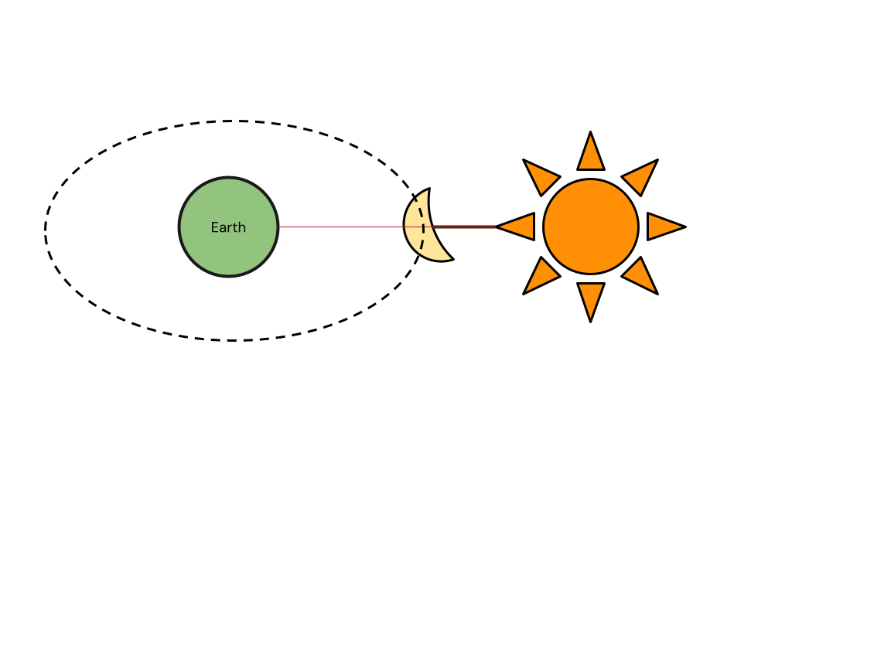
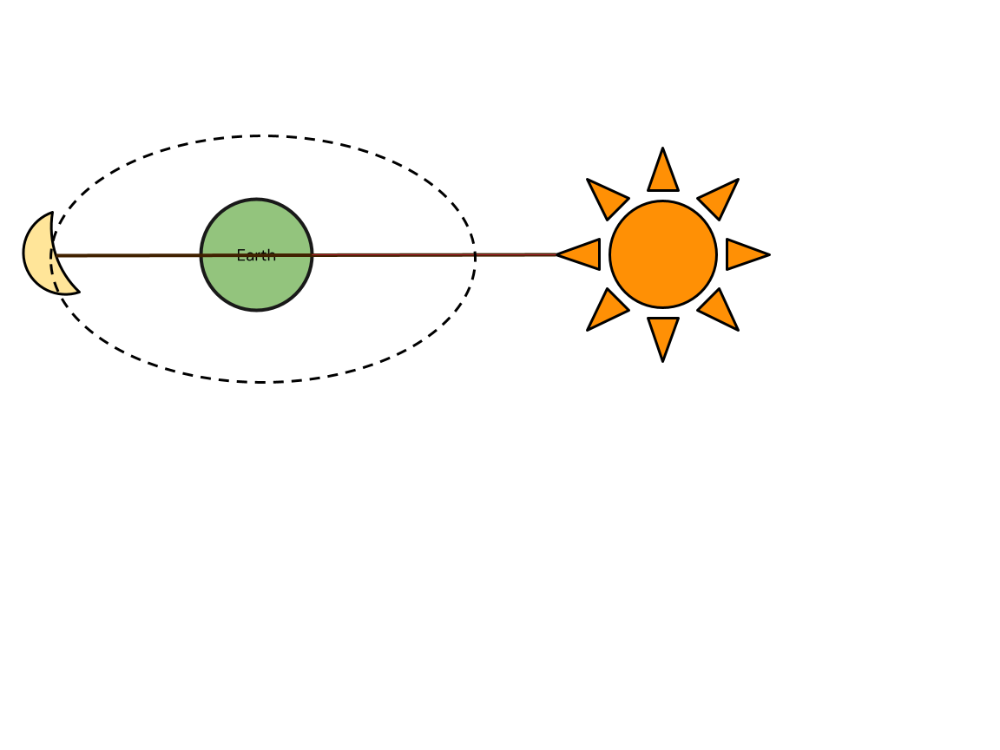
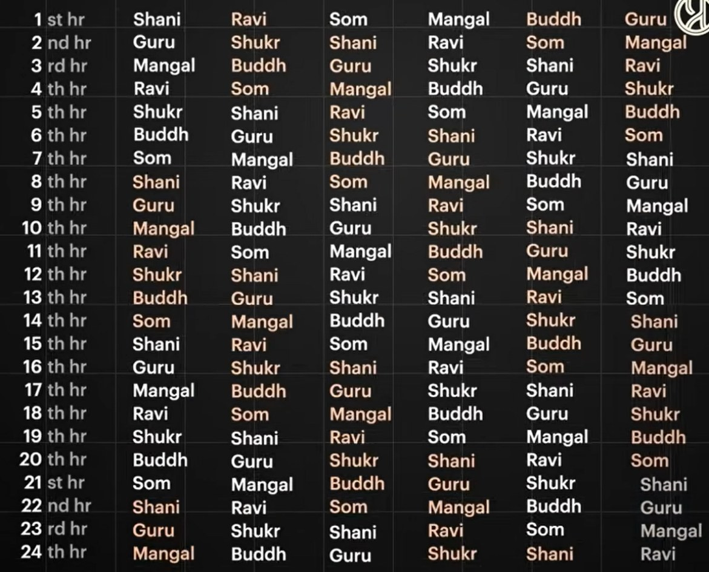

Hindu Calendar
यथा पिण्डे तथा ब्रह्माण्डे ।As is the microcosm (the body), so is the macrocosm (the universe)
The panchang (panchanga) splits time into five limbs:
- Tithi
- Vara
- Nakshatra
- Yoga
- Karana
Source: Panchang – The Five Limbs of Time (Astro Solaris)
Tithi
1 day = 1/30th of a revolution of the moon = 1 tithi
It takes the moon 29.5 days to go around the Earth.
- Full moon to new moon, the phase changes by 180 degrees, and then 180 degrees the other way, which equals 360 degrees
- Divide that by 30 and you get 12 degrees
- 1 tithi = the amount of time it takes for the phase of the moon to shift by 12 degrees
- How did they calculate that?
- If you have the moon, sun and Earth, you calculate the angle of the sun and moon as seen from Earth
- New moon: the angle of the sun and the moon in relation to the Earth is zero

New moon: sun and moon at 0° from Earth - The moon goes around the Earth to the full moon phase (halfway) = 180 degrees (15 days later)

Full moon: 180°, about 15 days later - Tithi = calculate the angle between the sun and moon: 0–12, 12–24, …
- Can be between 19 and 27 hours because of the moon’s elliptical orbit around the Earth
- Look at the tithi. If it goes over two days, count the day that contains the sunrise
- 2 sunrises? It starts before a sunrise and it’s a 26 hr tithi (usually celebrate the first day)
- If it starts after sunrise and stops before the next sunrise, it’s sometimes skipped
Diwali
- Diwali is connected to Ammavasya
- Time before and after sunrise/sunset is called pradosh
Concept of Adhik Maas
- As mentioned in the slides, each month in the Hindu calendar has 29.5 days (we round to 30 for math purposes), and 12 lunar months (a year) = 354ish days, so you are 11 days short → the calendar shifts with respect to the seasons
- Calculate the month by the moon
- Calculate the year by the sun
- Took the entire sky and sliced it into 30 degrees each (zodiac, named by constellation)
- 1/12 sun shifts from one zodiac to the next = sankranti
- Every time you get a month with zero sankrantis, you insert an adhik maas and call it the name of the next month (adhik-kartik…)
- Adhik maas does not have a sankranti
- Every 3ish years has an adhik
You add a day every four years (overcorrection), but then every 100 years it is not a leap year (undercorrection); every 400 years is a leap year.
| Region | Calendar |
|---|---|
| North | Poornimanta |
| Middle | Amaanta |
| Kerala and Tamil Nadu | Solar calendar |
| West Bengal, Odisha and Assam | Combination of solar and lunar |
Vara
Reference: Ancient Indian Logic for Sequence of Weekdays | Origin of 7 Weekdays | Prachyam
- Hour comes from hora, which comes from ahoratra
- Arrange the navagrahas (the 7 celestial objects visible to the naked eye) from slowest to fastest:
- Shani (Saturn)
- Guru (Jupiter)
- Mangal (Mars)
- Ravi (Sun)
- Shukra (Venus)
- Buddha (Mercury)
- Soma (Moon)
In the order from slowest to fastest, assign each graha to an hour of the day. Once 24 hours are covered, start a new column. The first hour of the day signifies the leading graha of the day, hence the name.

Each day is broken up into 30 muhurtas.
Where did 24 hours come from?
लघूनि वै समाम्नाता दश पञ्च च नाडिका ।
ते द्वे मुहूर्तः प्रहरः षड्यामः सप्त वा नृणाम् ॥तृतीया स्कन्ध, 11th chapter, 8th shloka, श्रीमद्भागवतम्
Meaning: (blank in the original notes)
सप्तैते होरेशाः शनैश्चराद्या यथाक्रमं शीघ्राः ।
शीघ्रक्रमाच्चतुर्था भवन्ति सूर्योदयाद् दिनपाः ॥आर्यभटीया कल्क्रियापद १६
Dinpati
| Vara | Graha |
|---|---|
| Ravivara | Sun |
| Somavara | Moon |
| Mangalvara | Mars |
| Budhavara | Mercury |
| Guruvara | Jupiter |
| Shukravara | Venus |
| Shanivara | Saturn |
Nakshatra
- Ashwini
- Bharani
- Krittika
- Rohini
- Mrigashira
- Ardra
- Punarvasu
- Pushya
- Ashlesha
- Magha
- Purva Phalguni
- Uttara Phalguni
- Hasta
- Chitra
- Swati
- Vishakha
- Anuradha
- Jyeshtha
- Mula
- Purva Ashadha
- Uttara Ashadha
- Shravana
- Dhanishta
- Shatabhisha
- Purva Bhadrapada
- Uttara Bhadrapada
- Revati
Yoga
Notes not written yet.
Karana
Notes not written yet.